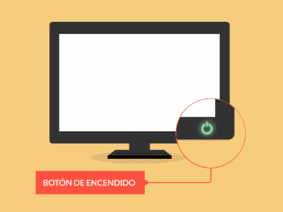
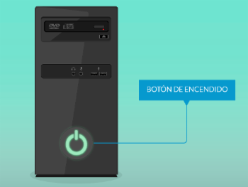
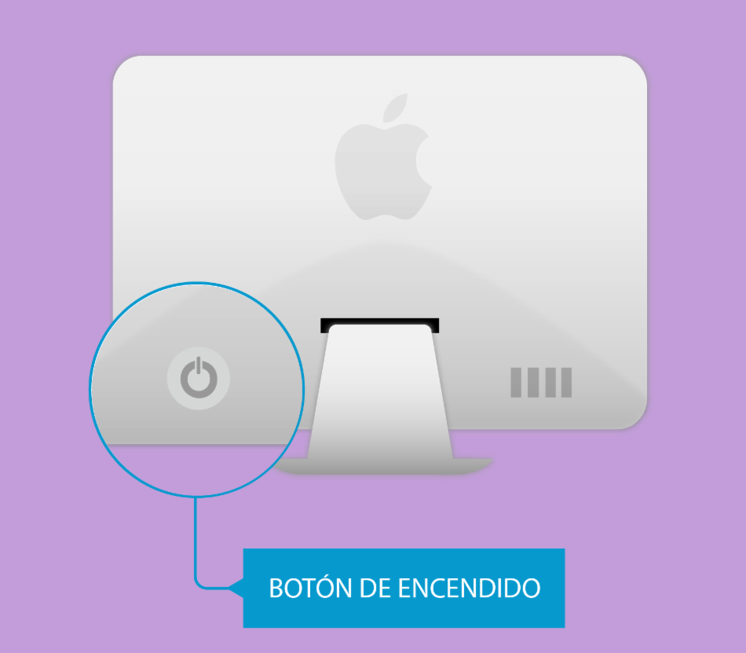

Ambiente apropiado a la hora de usar un computador:
El ambiente apropiado a la hora de trabajar en una oficina viene por varios factores, los cuales no solamente ayudarán a que los equipos no especializados estén en óptimas condiciones.
Temperatura:
El ambiente ideal de trabajo tanto para los equipos como para los usuarios es de 24 °C, el espacio de una oficina debe ser preferiblemente abierto.
Espacio:
El espacio en una oficina debe ser preferiblemente abierto, los cubículos cerrados son propensos a acumulaciones de desperdicios ambientales de cualquier tipo (moho, polvo, etcétera), evitar la humedad alrededor.
Evita el sobrecalentamiento del equipo (Para Laptos):
Se recomienda en tener el equipo en superficies lisas para permitir la buena circulación de la ventilación, por ejemplo: en una mesa, escritorio. Evita tenerla sobre la cama, sillones, cobijas, alfombras, etc.
Evita situaciones que puedan poner en riesgo tu equipo:
Para evitar accidentes se debe evitar comer encima del equipo, y es importante el mantener lo más alejado posible las bebidas o usar termos con tapa.
¿Cómo usar un computador?
Antes de encender tu computador primero debemos verificar las conexiones de los cables,
Comprueba que la toma de corriente en la pared funciona correctamente enchufando un dispositivo (por ejemplo, una lámpara) que sepas que funciona y observa si funciona correctamente.
Asegúrate, de que el protector contra sobrecargas de tensión o la regleta estén correctamente enchufados a la corriente, y de que el interruptor esté en la posición de encendido. Enchufa otros dispositivos a la regleta para confirmar que están funcionando correctamente.
Comprueba que el interruptor de encendido y apagado de la fuente de alimentación de la PC está activado.
Comprueba, asimismo, que el cable de alimentación de la PC esté correctamente enchufado a la toma de corriente y a la fuente de alimentación, ya que es posible que se haya soltado con el tiempo.
¿Cómo encender un computador?
Después de haber revisado las conexiones de tu computador puedes encenderlo, siguiendo estos sencillos pasos:

Paso 1:
Enciende el monitor oprimiendo el botón de encendido o power. La ubicación del botón depende del fabricante, se puede encontrar en la parte delantera o trasera de la pantalla.
Si tienes periféricos conectados a tu equipo y deseas utilizarlos, enciéndelos también, pulsando el botón de encendido que poseen en el momento en que les darás uso.

Paso 2:
Si tienes un estabilizador de corriente, una multitoma o algún otro dispositivo, no olvides encenderlo; recuerda siempre comprobar que se encuentre en buen estado.
Oprime el botón de Encender o power, usualmente es el botón más grande que encuentras en la parte frontal de la torre y tiene el símbolo de encendido.

Paso 3:
Empieza a disfrutar de tu computador de escritorio.
Algunos computadores Mac y Windows vienen sin torre, ya que todo su sistema está incorporado en el monitor o pantalla, estos se llaman computadores todo en uno. En este tipo de equipos, sólo tienes que oprimir el botón de encender.
¿Cómo apagar un computador de manera correcta?
Desde el menú de Inicio:
Esto es lo más básico y lo que harás siempre, lo que hacemos normalmente. Depende los pasos de la versión de sistema operativo que tengas, pero simplemente debes ir al icono de Windows en la barra de tareas y veremos un botón de encendido o apagado. Ponemos el ratón encima de ese icono y verás “encendido/apagado”.
Sigue los pasos y elige “apagar”. Puede variar ligeramente según tu versión de Windows, pero generalmente veremos las opciones para cerrar sesión, suspender el equipo, para apagar o para reiniciarlo.
Esto mismo, podemos hacerlo también usando el teclado fácilmente. Para ello, pulsamos en un principio sobre el botón de Windows de nuestro teclado y una vez que se nos abre el menú de inicio, tocamos sobre la tecla TAB hasta que consigamos llevar el foco sobre el icono del menú que se muestra en el lateral izquierdo del menú.
Ahora, nos desplazamos con el cursor hacia abajo hasta llegar al icono del interruptor, pulsamos Enter, nos movemos con los cursores hasta la opción Apagar y por último, pulsamos Enter para finalmente conseguir apagar el ordenador desde el teclado.